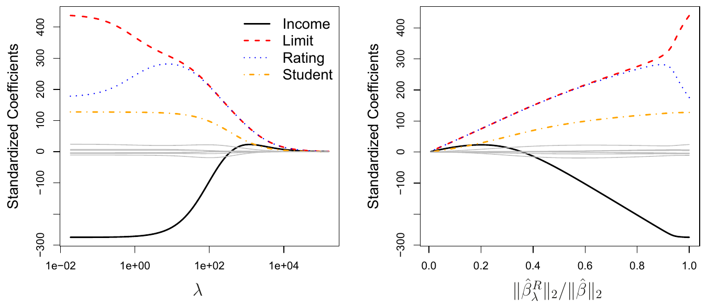
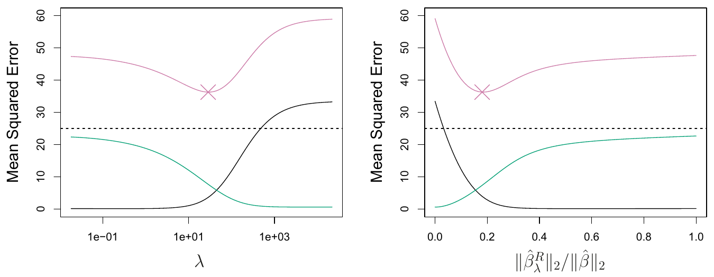
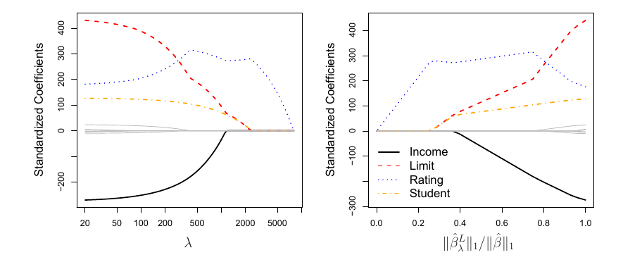
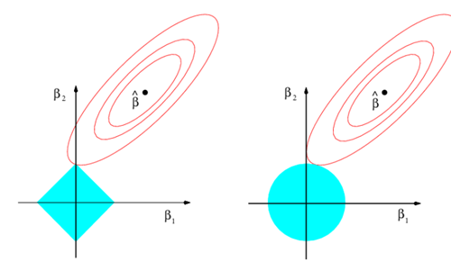
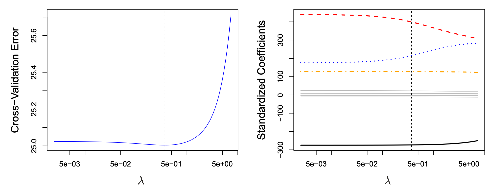
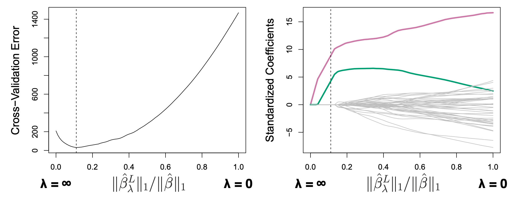

\lambda\sum_{j}\beta_j^2 is small when the coefficients are close to zero, so it pulls them toward 0.
Tuning parameter \lambda \ge 0
\lambda = 0: least squares
\lambda \to \infty: all \hat\beta_j \to 0 (null model)
One set of estimates for each\lambda
The intercept \beta_0 is not penalized (with centred predictors, \hat\beta_0 = \bar y).
A tax on big coefficients: a toy example
One predictor, two candidate values of \beta, and \lambda = 1:
Candidate
RSS
Penalty \lambda\beta^2
Ridge total
\beta = 3
10
9
19
\beta = 2
12
4
16
Least squares only looks at RSS → picks \beta = 3
Ridge looks at RSS + penalty → picks \beta = 2
Ridge accepts a slightly worse training fit in exchange for a smaller coefficient. A bigger \lambda makes that trade more attractive.
Toy numbers for illustration, not from the book.
Figure 6.4: ridge coefficient paths

Standardized ridge coefficients for the ten predictors in the Credit data, plotted against \lambda (left) and against \|\hat\beta^R_\lambda\|_2/\|\hat\beta\|_2 (right), where \|\beta\|_2=\sqrt{\sum_j \beta_j^2}. Source: ISLP, Fig. 6.4.
Left: at \lambda \approx 0 we get least squares; as \lambda grows, the coefficients shrink toward 0. Right: 1 = no shrinkage, 0 = everything shrunk to zero.
Standardize the predictors first
Least squares is scale equivariant
Measure income in $1,000s instead of $ → its coefficient becomes 1,000× larger
The prediction X_j\hat\beta_j doesn’t change
Ridge is not
The penalty \lambda\sum\beta_j^2 depends on the coefficient’s size, so it depends on the predictor’s units
Changing the scale of one predictor can change the fit, even the other coefficients
Fix: give every predictor standard deviation 1 before fitting: \;\tilde{x}_{ij}=\dfrac{x_{ij}}{\sqrt{\frac{1}{n}\sum_{i=1}^{n}(x_{ij}-\bar{x}_j)^2}} \quad (6.6)
Figure 6.4 shows these standardized coefficients. In the workshop, glmnet standardizes for you by default.
Why ridge beats least squares: bias vs. variance

Squared bias (black), variance (green), test MSE (purple) for ridge on simulated data (n = 50, p = 45). Dashed line: minimum possible MSE. ×: lowest test MSE. Source: ISLP, Fig. 6.5.
\lambda from 0 to about 10: variance drops fast, bias barely rises → test MSE falls
Lowest test MSE at about \lambda \approx 30; beyond that, bias takes over
Least squares (\lambda = 0) is almost as bad as the null model (\lambda = \infty)
When does ridge help most?
Statistically
When least squares has high variance: p close to n
When p > n: least squares has no unique solution, ridge still works
Trades a small increase in bias for a large decrease in variance
Computationally
Best subset: 2^p models (p = 45: about 3.5 \times 10^{13})
Ridge: one model per \lambda
The whole path over all \lambda costs about the same as one least squares fit
But: ridge shrinks every coefficient and never sets one exactly to zero (unless \lambda = \infty), so all p predictors stay in the model. Next: the lasso fixes that.
Why introduce the lasso?
Ridge regression shrinks coefficient estimates toward zero, but generally does not set them exactly to zero.
Ridge therefore typically retains all p predictors, even when only a subset may be important.
This can make interpretation difficult when p is large.
The lasso uses an absolute-value penalty and can set some coefficient estimates exactly to zero.
Main distinction: ridge shrinks coefficients; lasso shrinks coefficients and can select variables.
Measures squared prediction errors on the training data.
L1 penalty
\lambda\sum_{j=1}^{p}|\beta_j|
Penalizes the total absolute size of the slope coefficients.
Tuning parameter \lambda
Larger \lambda: stronger penalty and more shrinkage.
Smaller \lambda: weaker penalty.
The intercept \beta_0 is not included in the penalty.
Lasso coefficient paths

The standardized lasso coefficients for the Credit data set are shown against \lambda and the ratio of the lasso coefficient norm to the least-squares coefficient norm. Source: ISLP, Fig. 6.6.
At \lambda=0, the lasso gives the least-squares fit. When \lambda is sufficiently large, all coefficient estimates become zero (the null model).
Reading the coefficient paths
As \lambda increases, coefficient magnitudes shrink; at a sufficiently large value, all coefficients are zero.
The order in which predictors enter is data-dependent.
In the Credit example, rating enters first; student and limit enter almost simultaneously; income follows.
Different values of \lambda can therefore produce models with different numbers of predictors.
Unlike lasso, ridge regression generally keeps all predictors in the model, although their coefficient magnitudes shrink.
Equivalent constrained formulations
The lasso can also be written as
\min_{\boldsymbol\beta} RSS
\quad\text{subject to}\quad
\sum_{j=1}^{p}|\beta_j|\le s.
Ridge regression can be written as
\min_{\boldsymbol\beta} RSS
\quad\text{subject to}\quad
\sum_{j=1}^{p}\beta_j^2\le s.
Lasso: coefficient-size budget
The sum of absolute coefficient values must not exceed s.
Ridge: squared-coefficient budget
The sum of squared coefficient values must not exceed s.
A smaller s imposes a tighter restriction. For each value of \lambda, a corresponding s can give the same estimates under the equivalent constrained formulation.
Connection to best subset selection
\min_{\boldsymbol\beta} RSS
\quad\text{subject to}\quad
\sum_{j=1}^{p} I(\beta_j\ne 0)\le s.
I(\beta_j\ne0)=1 if \beta_j is nonzero; it is 0 if \beta_j=0.
The sum counts the number of nonzero coefficients, so s limits how many predictors may be included.
This is best subset selection: find the lowest-RSS model with at most s predictors.
Exhaustively checking all possible subsets becomes computationally infeasible when p is large.
The s in this formula counts predictors. It is not the same as the lasso’s s, which limits the sum of absolute coefficient values.
Constraint regions and RSS contours

The blue regions are the constraints; the red ellipses are contours of RSS. The solution is the first point at which an RSS contour touches the constraint region. Source: ISLP, Fig. 6.7.
The lasso’s diamond has sharp corners on the axes; the ridge circle has a smooth boundary.
Why the geometry matters
Lasso: diamond
|\beta_1|+|\beta_2|\le s
The corners lie on the axes.
The RSS contour can touch a corner.
A coefficient can then be exactly zero, excluding its predictor.
Ridge: circle
\beta_1^2+\beta_2^2\le s
The boundary is smooth.
The RSS contour generally touches away from the axes.
Coefficients are generally nonzero, though they may be small.
Lasso can perform feature selection because it can set coefficients exactly to zero; ridge generally shrinks without eliminating predictors.
Extending the geometry to more predictors
p=2: the lasso constraint is a diamond; the ridge constraint is a circle.
p=3: the lasso constraint becomes a polyhedron; the ridge constraint becomes a sphere.
p>3: the lasso constraint becomes a polytope; the ridge constraint becomes a hypersphere.
The key idea remains the same: the sharp corners of the lasso constraint make exact-zero coefficients possible, including multiple zeros at once in higher dimensions.
Ridge or lasso: which predicts better?
The lasso yields sparser, more interpretable models. Does it also predict better?
It depends. Neither method dominates the other in general.
Case 1: simulation design
n = 50 observations
p = 45 predictors
All 45 predictors related to the response
Ridge and lasso fitted over a grid of \lambda
Squared bias, variance and test MSE recorded for each fit
Both priors have mean zero, with scale a function of \lambda. Source: ISLP, Fig. 6.11.
Result: the Laplace prior is sharply peaked at zero, so the lasso expects a priori that many coefficients are exactly zero; ridge expects them to be spread around zero.
Selecting the tuning parameter: ridge example
Ridge and lasso both depend on \lambda, so we need a way to choose it from the data.
Cross-validation
Choose a range of \lambda values
Compute the CV error for each \lambda
Select the \lambda with the smallest CV error
Re-fit on all observations using \lambda

Left Figure: leave-one-out CV error for ridge on the Credit data. Dashed lines: selected \lambda. Right Figure: all ten coefficients, with Limit, Rating, Student in color. Source: ISLP, Fig. 6.12.
Result: the selected \lambda is small and the dip is shallow, so many values give a similar error. Here we might simply use least squares.
Selecting the tuning parameter: lasso example

Left Figure: ten-fold CV error for lasso on the sparse simulated data from Fig. 6.9. Dashed lines: smallest CV error. Right Figure: lasso coefficients. Colored: signal variables; gray: noise variables. Source: ISLP, Fig. 6.13.
x-axis: size of the lasso coefficients as a fraction of least squares.
Result: the selected \lambda beats both extremes: CV error <50, vs. ~200 for the avg response (\lambda = \infty) and ~1,450 for least squares (\lambda = 0). Only two signal variables kept, out of p = 45 with n = 50.
Up next, the workshop: try everything from today on real data: ridge, lasso, and choosing \lambda.